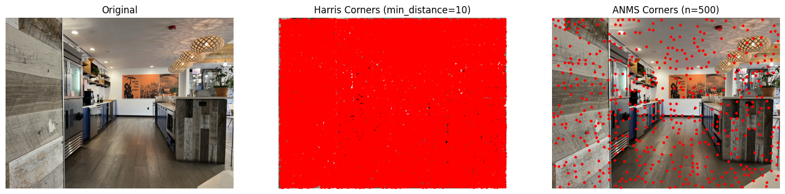
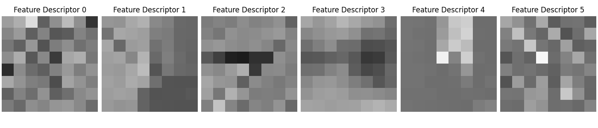
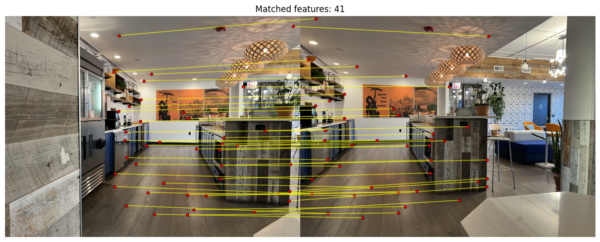
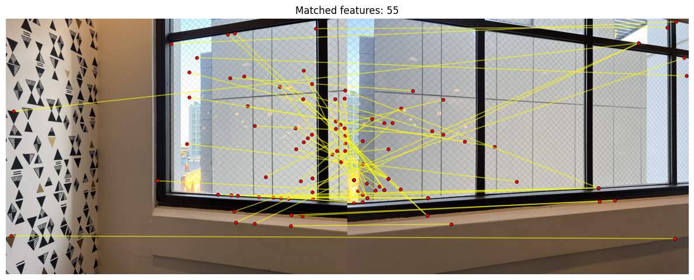
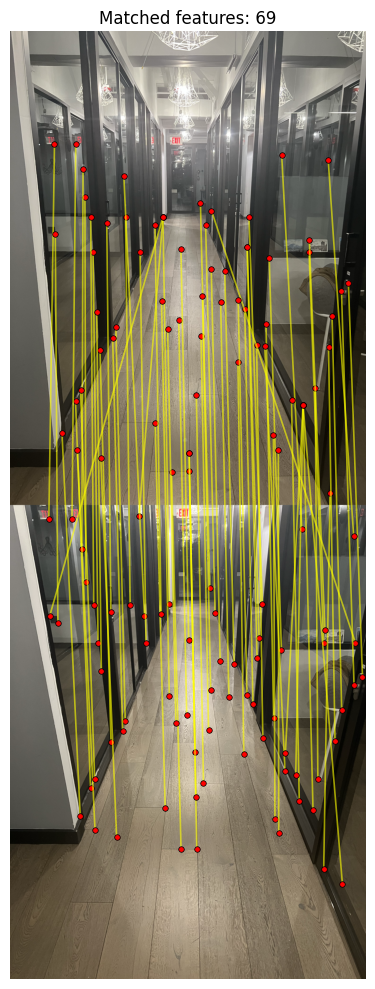
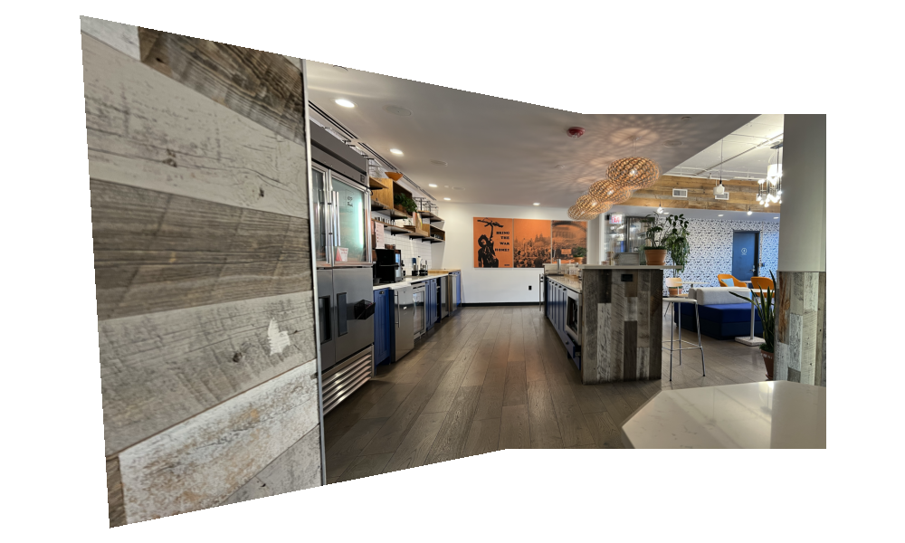
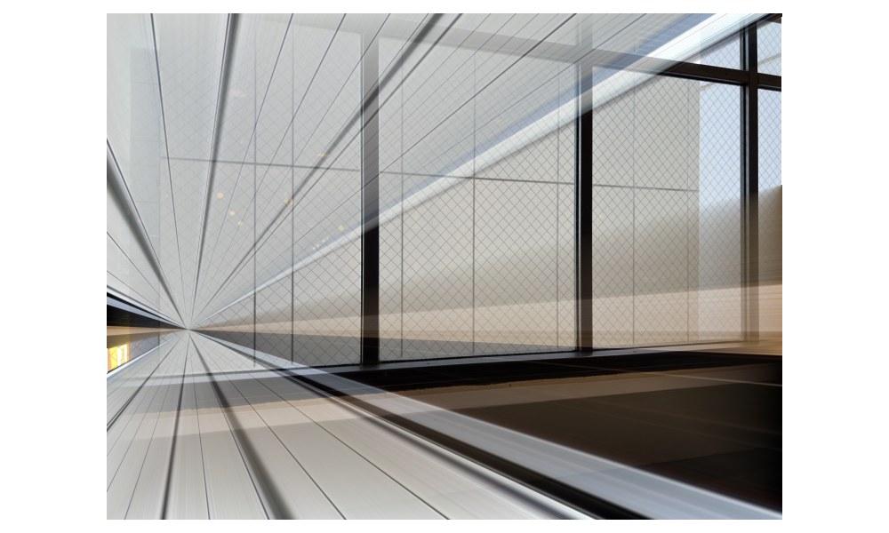

A.1 — Shoot the Pictures
Below are two sets of images with projective transformations between them. I took them by keeping my phone camera fixed while rotating my phone around. I chose overlapping scenes with a lot of detail and still objects so that I could get a lot of correspondences.
Set 1: WeWork


Set 2: Window


A.2 — Recover Homographies
Linear System Setup
For a pair of projective transformed images, the transformation can be described as a homography p'=Hp where H is a 3x3 matrix with 8 unknowns and p and p' are corresponding points between the two images. We can solve for H by rewriting the definition as Ah=b and solving for h using least squares. Below is an image of the steps required to set up this linear system.

As you can see, each pair of correspondences adds two rows to to the linear system.
Visualized Correspondences and H
Below are visualizations of the sets from part 1 along with their correspondences and the recovered H matrix. I chose to use 20 correspondences.
Set 1: WeWork

Set 2: Window

A.3 — Warp the Images
My process for warping is as follows. I start by projecting the image’s four corners through the homography and get a bounding box. This bounding box defines the output canvas along with offsets (dx, dy) to keep all pixel positions nonnegative. I then use inverse warping to map each output pixel back to the source and sample with either nearest neighbor or bilinear (weighted average of four neighbors) while creating an alpha mask for pixels mapped outside the source. For rectification, I select four corners of a rectangular object, artificially define an axis-aligned target rectangle, compute the homography, and warp to create a straight on rectangular view.
I compute the target rectangle by averaging the opposite edge lengths of the selected rectangular object to set width and height (top with bottom, left with right), then place that rectangle axis-aligned from (0, 0) to (target_w−1, target_h−1).
Rectification
Below are some examples of rectification using the process described above for both nearest neighbor and bilinear interpolation.
Abstract Painting

House Painting

A.4 — Blend the Images into a Mosaic
The process I used to create my mosaics is as follows. I pick 20 correspondences between the first image and the reference (the second image) and solve for the homography from image 1 to image 2. I then build a canvas large enough to hold both warped images by projecting the corners of image 1 with that homography and the corners of image 2 with the identity, and taking the bounding box. For each image, I inverse-warp every canvas pixel back to source coordinates (using the inverse homography for image 1 and the identity for image 2) and sample color with bilinear interpolation, also producing an alpha mask that is 1 where sampling is in bounds and 0 otherwise. I create a feather mask in each source image (weight is strongest at the center and falls to zero at the edges), warp it to the canvas, and multiply by the alpha mask so out-of-bounds pixels do not contribute. Finally, at each canvas pixel I sum the weighted colors from the two images and divide by the summed weights to produce a clean blend with minimal seams. This approach scales to more images by estimating homographies for overlapping pairs, choosing a reference image, composing each image’s transform into that reference frame, warping them all into a common canvas, and applying the same feathered weighted averaging across all contributors.
Mosaic 1

Mosaic 2

Mosaic 3


B.1 — Harris Corner Detection
I used the provided Harris corner detector to find lots of initial candidate points. From those candidates, I ran Adaptive Non-Maximal Suppression (ANMS). The process for ANMS is as follows: for each Harris corner, I look for the closest corner that is similar in strength with a robustness of 0.9 and record the distance as its “suppression radius.” Finally, I sort by this radius and keep the top 500. The intuition behind this process is that rather than simply taking the strongest corners, we select points that are both strong and spatially well-distributed. This ensures good coverage across the image, which is especially important for maximizing the number of shared corners in the overlapping regions between a given image 1 and image 2. The figure below shows an original image, the Harris points, and the ANMS result:

B.2 — Feature Descriptor Extraction
My process for extracting feature descriptors is as follows. I start by considering the 40x40 neighborhood around each ANMS corner and sample it at every 5 pixels to get an 8x8 summary of that area. Since we are dealing with sub-pixel values, I use bilinear sampling. I also add reflective padding around the image so that corners near the border still have a full neighborhood to sample from. Afterwards, I normalize each 8x8 patch. The intuition behind this process is that it produces descriptors that are both compact and invariant to local brightness/contrast changes.

B.3 — Feature Matching
My process for finding feature matches is as follows. I compare each 8×8 descriptor from image 1 to all descriptors from image 2 using the squared Euclidean distance. For every descriptor from image 1, I find its nearest and second-nearest neighbors in image 2 and apply the Lowe ratio test: if the ratio (best / second-best) <= 0.45, I keep it as a valid match. I chose 0.45 after consulting Figure 6b from the paper, which showed that at this value, incorrect matches were low while correct matches remained relatively high. At the same time, it was a value that was a lot more forgiving than something like 0.1 (which although had more correct matches it would also be a lot more strict and give us less matches to work with for RANSAC). The value of 0.45 was actually still too strict for some images such as the window pair. For this pair of images, I elected to use a value of 0.75 so that we would have enough matches to work with. The intuition behind this overall process is that a good feature match should stand out from other candidates.
Set 1: WeWork

Set 2: Window
For this pair of images, I noticed a large number of false matches, and I had to use a higher Lowe ratio threshold of 0.75 to obtain enough matches for RANSAC. I believe this is because of many repetitive patterns in the scene (on the windows and on the buildings in the background) which produce a lot of similar local descriptors.

Set 3: Hallway

B.4 — RANSAC for Robust Homography
I use 4-point RANSAC to estimate a robust homography. My process is as follows. For each iteration (I perform 2000), I randomly pick 4 matched pairs and compute a homography. I then project all image 1 points with this homography and count how many land within eps (I chose 2.5) pixels of their match in image 2 (the inliers). I keep the iteration with the most inliers and recompute a final homography using just those inliers. Finally, I build the automatic mosaic by warping image 1 onto image 2's plane with that final homography. The intuition behind this process is that although most random 4-point guesses are wrong, a correct solution will agree with most of them. By scoring iterations on how many inliers we have and refitting on them, we can find a good homography.
Results

